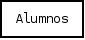
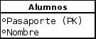
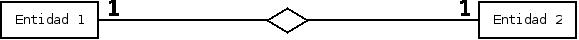
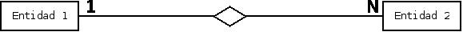
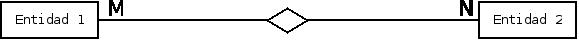

Table Of Contents
Previous topic
Next topic
Lecture 2 - Relational Databases: Querying relational databases
Lecture 2 - Relational Databases: Querying relational databases
Una BD es un conjunto de datos interrelacionados, almacenados sin redundancias innecesarias,de forma independiente de los programas que acceden a ellos.
Un SGBD es un conjunto de programas que permiten crear y mantener una BD, asegurando su integridad, confidencialidad y seguridad. Por tanto debe permitir:
- Definir una base de datos: especificar tipos, estructuras y restricciones de datos.
- Construir la base de datos: guardar los datos en algún medio controlado por el mismo SGBD.
- Manipular la base de datos: realizar consultas, actualizarla, generar informes.
Algunas de las características deseables en un SGBD son:
- Control de la redundancia: la redundancia de datos tiene varios efectos negativos (duplica el trabajo al actualizar, desperdicia espacio en disco, puede provocar inconsistencia de datos) aunque a veces es deseable por cuestiones de rendimiento.
- Restricción de los accesos no autorizados: cada usuario ha de tener unos permisos de acceso y autorización para realizar operaciones sobre la BD.
- Cumplimiento de las restricciones de integridad: el SGBD ha de ofrecer recursos para definir y garantizar el cumplimiento de las restricciones de integridad.
Cuando se utiliza una BD para gestionar información, se está plasmando una parte del mundo real en una serie de tablas, registros y campos; creándose un modelo parcial de la realidad. Antes de crear físicamente estas tablas en la BD se debe realizar un modelo de datos.
El modelo de datos más utilizado es denominado E-R. En el modelo E-R se representa una situación real a través de entidades y relaciones entre dichas entidades:
Entidades
Los objetos que aparecen en la vida real, corresponden a una entidad. Por ejemplo: alumnos, empleados, aviones, coches, alojamientos, etc. Una entidad da lugar a una tabla en la BD.
Estas entidades están compuestas por varios atributos, que vienen a ser sus propiedades. Por ejemplo: la entidad alumnos, tendrá los atributos nombre, #pasaporte, nacionalidad, fecha de nacimiento, etc.
Los atributos también reciben el nombre de columnas en la terminología de BD. De entre los atributos habrá uno o un conjunto de ellos, que no asegura la unicidad de una fila; a este atributo o conjunto de atributos se le llama clave de la entidad, en el caso de los alumnos, sería el #pasaporte. En toda entidad siempre hay al menos una clave que en el peor de los casos estará formada por todos los atributos de la tabla. Ya que pueden haber varias claves y necesitamos elegir una, lo haremos atendiendo a estas normas:
- Que sea única.
- Que se tenga pleno conocimiento de ella.- ¿Por qué en las empresas se asigna a cada cliente un número de cliente?.
- Que sea pequeña, ya que será muy utilizada por el SGBD.
Cada entidad tendrá un número ilimitado de elementos. Por ejemplo: un elemento de la entidad alumnos será un alumno en sí; así el alumno Juan será un elemento, José será otro. Cada uno de esos elementos también recibe el nombre de fila o tuplas en la terminología de BD.
Combinando estos tres conceptos tenemos una estructura del tipo tabla, elemento esencial en una BD relacional.
Relaciones
Las entidades no están aisladas sino que están relacionadas entre sí. Estas relaciones reflejan las interacciones lógicas existentes entre entidades. Las relaciones pueden ser de tres tipos:
Relaciones 1 - 1: Las entidades que intervienen en la relación se asocian una a una (Ej: la entidad HOMBRE, la entidad MUJER y entre ellos la relación MATRIMONIO).
Relaciones 1 - N: Una ocurrencia de una entidad está asociada con muchas (n) de otra (Ej: la entidad EMPRESA, la entidad TRABAJADOR y entre ellos la relación TRABAJAR-EN).
Relaciones M - N: Cada ocurrencia, en cualquiera de las dos entidades de la relación, puede estar asociada con muchas (n) de la otra y viceversa (Ej: la entidad ALUMNO, la entidad ASIGNATURA y entre ellos la relación MATRÍCULA).
Es una BD que utiliza como estructura de almacenamiento tablas. Las interconexiones (relaciones) entre los datos (que están guardados en tablas), se generan a través de atributos comunes entre ellas llamadas claves primarias y foráneas.
Ventajas:
- Sistemas de bases de datos utilizada por las empresas comerciales más importantes.
- Modelo simple.
- Consultas a través de lenguajes de alto nivel.
- Implementación eficiente.
Se tiene una base de datos que contiene dos relaciones: una denominada EMPLEADOS, que almacena datos de los empleados de una empresa, y otra con el nombre DESPACHOS, que almacena los datos de los despachos que tiene la empresa. Los empleados que trabajan para una empresa pueden estar vinculados con los despachos de la empresa, porque a cada empleado se le asigna un despacho concreto para trabajar.
La tabla DESPACHOS posee 3 atributos (edificio, número, superficie) y 5 registros (o filas). Esta tabla posee un conjunto de atributos cuyos valores combinados dan la unicidad a cada fila. Se trata de los atributos edificio y número; se les llama clave primaria compuesta.
La tabla EMPLEADOS posee 6 atributos (DNI, nombre, apellido, DNIjefe, edificiodesp, númerodesp) y 4 registros (o filas), en el segundo registro se aprecia que George no posee despacho asignado por lo que se agrega el valor “unknown” o “undefined” que se define como NULL. Esta tabla posee un atributo cuyo valor es único en cada tupla que es atributo DNI y se le llama clave primaria.
En la relación de esquema EMPLEADOS, la clave foránea formada por los atributos {edificiodesp, númerodesp} referencia la clave primaria de la relación DESPACHOS. De este modo, se cumple que todos los valores que no son nulos de los atributos edificiodesp y númerodesp son valores que existen para los atributos edificio y número de DESPACHOS. Esta clave foránea indica, para cada empleado, el despacho donde trabaja. Además, el atributo DNIjefe es otra clave foránea que referencia la clave primaria de la misma relación EMPLEADOS, e indica, para cada empleado, quien es su jefe.
La creación de relaciones (tablas) en SQL
CREATE TABLE DESPACHOS(edificio VARCHAR(50), numero INTEGER, superficie INTEGER, PRIMARY KEY(edificio,numero));
CREATE TABLE EMPLEADOS(DNI VARCHAR(50), nombre VARCHAR(50), apellido VARCHAR(50), DNIjefe VARCHAR(50), edificiodesp VARCHAR(50), numerodesp INTEGER, PRIMARY KEY(DNI), FOREIGN KEY(edificiodesp,numerodesp) REFERENCES DESPACHOS(edificio,numero));
Hoy en día existen muchas empresas y sitios web que necesitan mantener de forma eficiente un gran volumen de datos. Muchos de ellos optan por soluciones comerciales (Oracle Database o IBM DB2 entre otras ), aunque muchas otras confían en el software libre optando por una solución como PostGreSQL o MySQL. Cabe mencionar que un motor de BD relacional (BDR) es equivalente a un SGBDR.
Es muy común la pregunta, entre las personas que se adentran por primera vez en el mundo de las bases de datos libres, ¿Qué motor de bases de datos debo usar? ¿MySQL o PostGreSQL?. A continuación se verán algunos detalles de ambos motores.
PostGreSQL es un sistema de gestión de bases de datos objeto-relacional basado en el proyecto POSTGRES, de la Universidad de Berkeley. El director de este proyecto es el profesor Michael Stonebraker, patrocinado por Defense Advanced Research Projects Agency (DARPA), Army Research Office (ARO), National Science Foundation (NSF), y ESL, Inc.
Un poco de historia
PostGreSQL fue derivado del proyecto Postgres, lleva más de una década de desarrollo, siendo hoy en día, el sistema libre más avanzado, soportando la gran mayoría de las transacciones SQL, control concurrente y un variado conjunto de “language bindings” como por ejemplo C, C++, Java, Python, PHP y muchos más.
La implementación de Postgres DBMS comenzó en 1986, y no hubo una versión operativa hasta 1987. La versión 1.0 fue liberada en Junio de 1989 a unos pocos usuarios, tras la cual se liberó la versión 2.0 en Junio de 1990 debido a fuertes críticas sobre el sistema de integridad referencial, que obligó a su reimplementación. La versión 3.0 apareció en el año 1991.
En 1994, Andrew Yu y Jolly Chen añadieron un intérprete de SQL a este gestor. Postgres95, como así se llamó fue liberado a Internet como un proyecto libre (OpenSource). Estaba escrito totalmente en C, y la primera versión fue un 25% más pequeña que Postgres, y entre un 30 y un 50% más rápida. A parte de la corrección de algunos bugs, se mejoró el motor interno, se añadió un nuevo programa monitor, y se compiló usando GNU Make y el compilador gcc.
En 1996, los desarrolladores decidieron cambiar el nombre al SGDB, y lo llamaron PostGreSQL para reflejar la relación entre Postgres y las versiones recientes de SQL.
Características
- Implementación del estándar SQL92/SQL99.
- Licencia BSD.
- Por su arquitectura de diseño, escala muy bien al aumentar el número de CPUs y la cantidad de RAM.
- Soporta transacciones y desde la versión 7.0, claves foráneas (con comprobaciones de integridad referencial).
- Tiene mejor soporte para triggers y procedimientos en el servidor.
- Incorpora una estructura de datos array.
- Incluye herencia entre tablas (aunque no entre objetos, ya que no existen), por lo que a este SGBD se le incluye entre los gestores objeto-relacionales.
- Implementa el uso de rollback’s, subconsultas y transacciones, haciendo su funcionamiento mucho más eficaz.
- Se pueden realizar varias operaciones al mismo tiempo sobre la misma tabla sin necesidad de bloquearla.
MySQL es un sistema de gestión de bases de datos relacional, licenciado bajo GPL de la GNU. Su diseño multihilo permite soportar una gran carga de forma muy eficiente. MySQL fue creado por la empresa sueca MySQL AB, que mantiene el copyright del código fuente del servidor SQL, así como también de la marca.
Aunque MySQL es software libre, MySQL AB distribuye una versión comercial, que no se diferencia de la versión libre más que en el soporte técnico que se ofrece, y la posibilidad de integrar este gestor en un software propietario, ya que de no ser así, se vulneraría la licencia GPL.
Un poco de historia
MySQL surgió como un intento de conectar el gestor mSQL a las tablas propias de MySQL AB, usando sus propias rutinas a bajo nivel. Tras unas primeras pruebas, vieron que mSQL no era lo bastante flexible para lo que necesitaban, por lo que tuvieron que desarrollar nuevas funciones. Esto resultó en una interfaz SQL a su base de datos, con una interfaz totalmente compatible a mSQL.
No se sabe con certeza de donde proviene su nombre. Por un lado dicen que sus librerías han llevado el prefijo ‘my’ durante los diez últimos años. Por otro lado, la hija de uno de los desarrolladores se llama My. No saben cuál de estas dos causas (aunque bien podrían tratarse de la misma), han dado lugar al nombre de este conocido gestor de bases de datos.
Características
- Lo mejor de MySQL es su velocidad a la hora de realizar las operaciones, lo que le hace uno de los gestores que ofrecen mayor rendimiento.
- Consume muy pocos recursos ya sea de CPU como así también de memoria.
- Licencia GPL y también posee una licencia comercial para aquellas empresas que deseen incluirlo en sus aplicaciones privativas.
- Dispone de API’s en gran cantidad de lenguajes (C, C++, Java, PHP, etc).
- Soporta hasta 64 índices por tabla, una mejora notable con respecto a la versión 4.1.2.
- Mejor integración con PHP.
- Permite la gestión de diferentes usuarios, como también los permisos asignados a cada uno de ellos.
- Tiene soporte para transacciones y además posee una característica única de MySQL que es poder agrupar transacciones.
Es indispensable tener en cuenta para qué se necesitará. En múltiples foros, se asocia a PostGreSQL a estabilidad, bases de datos de gran tamaño y de alta concurrencia. Por otra parte, se asocia MySQL a bases de datos de menor tamaño, pero de mayor velocidad de respuesta ante una consulta.
Cada uno de estos gestores poseen características que los convierten en una gran opción en su respectivo campo al momento de elegir, ya que fueron concebidos para una determinada implementación.